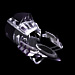
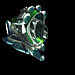
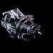
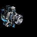
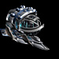
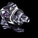
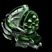

|
Виды оружия
Вооружение можно купить в любом магазине
оборудования и установить на свой корабль. Каждый вид оружия имеет свой принцип
действия. Кроме того, существует множество модификаций, отличающихся размером,
скорострельностью, радиусом и мощностью поражения. Одни виды оружия больше подходят
для тактических сражений в обычном космосе,
а другие - для аркадных сражений в гиперпространстве.
 |
Повреждения: малые
Радиус поражения: средний
Принцип действия: энергетическое
В космосе: луч синего цвета
В гипере: слабо наводящиеся ракеты, дальность средняя
Основное назначение промышленного лазера - работы, связанные с глубоким бурением,
добычей полезных минералов и дроблением породы. В основе технологии – концентрация
светового луча на малой площади. Для увеличения мощности луча, длина световой
волны уменьшается гравитационными полями. Благодаря этому, промышленные лазеры
способны просверлить или разрезать даже небольшой астероид.
 Самое эффективное оружие для стрельбы по астероидам, так как после выстрела остается больший объем минералов. Самое эффективное оружие для стрельбы по астероидам, так как после выстрела остается больший объем минералов.
|
 |
Повреждения: средние с малым разбросом
Радиус поражения: малый
Принцип действия: осколочное
В космосе: несколько очередей желтоватого цвета
В гипере: сгустки энергии светло-синего цвета, дальность средняя
Плазменное орудие с увеличенными поражающими характеристиками.
На подлете к цели плазменный сгусток подвергается воздействию хаотичных гравитационных полей,
разделяющих его на сотни мелких частей, и поражает цель не точечным ударом, а серией небольших взрывов.
|
 |
Повреждения: средние с большим разбросом
Радиус поражения: большой
Принцип действия: энергетическое
В космосе: луч синего цвета
В гипере: зеленые шары с зазубринами, дальность не ограничена
Источником всесокрушающей мощи лезки является нелинейный генератор импульсов.
Заряд подается в накопительный блок каждого ствола и по мере накопления происходит сильный направленный выброс энергии.
Из-за рассеивающего эффекта, дальность стрельбы небольшая.
|
 |
Повреждения: ниже среднего
Радиус поражения: огромный
Принцип действия: ракетное
В космосе: корабль выпускает 3 ракеты с системой самонаведения
В гипере: при выстреле снаряд распадается на три части и имеет автонаводку, дальность большая
Трехствольное ракетное орудие. Ракеты оснащены сбалансированной системой автоматического преследования цели.
Усовершенствованный интеллектуальный блок делает бесполезными противоракетные маневры и использование маскировки противником.
Единственный недостаток – ракеты можно сбить обычным орудием на подлете к цели.
Ракетница позволяет вести боевые действия на большом расстоянии от противника на слабозащищенном корабле.
|
 |
Повреждения: малые, замедляет движение цели, восполняет структуру корпуса стреляющего пропорционально нанесенным противнику повреждениям
Радиус поражения: большой
Принцип действия: энергетическое
В космосе: луч желтого цвета
В гипере: распыляет полукругом снаряды, при попадании замедляющие противника, дальность малая
Это орудие использует принцип принудительной ретракции, или замедления, в условиях отсутствия трения. Генератор направленных гравитационных полей, или третон, оказывает противодействие движущей силе, снижая кинетическую энергию корабля – то есть замедляет его. Благодаря использованию акриновых технологий, ученым удалось добиться от этого оружия дополнительного эффекта – ремонтного. Починка стреляющего корабля производится, естественно, с помощью гравитационных полей и исключительно за счет цели.
|
 |
Повреждения: выше среднего с малым разбросом; большие при стрельбе по одной цели
Радиус поражения: малый
Принцип действия: энергетическое
В космосе: электрический разряд светло-желтого цвета
В гипере: луч из маленьких белых шариков, дальность малая
Технология фазера, впервые использованная еще древними, считалась безнадежно устаревшей в течение многих веков, пока Ридриг Келлер не внес в нее значительные усовершенствования.
В результате началась новая эра применения фазеров в военных целях. Это уже шестая модель устройства, обладающая большей мощностью, чем предыдущие модели, за счет волнового модулятора, фазер способен наносить цепочный урон трем врагам.
|
 |
Повреждения: выше среднего с большим разбросом
Радиус поражения: большой
Принцип действия: осколочное
В космосе: два снаряда, летящие к цели по малой дуге
В гипере: самонаводящиеся ракеты синего цвета, преследуют цель, дальность большая
Изначально устройство применялось исключительно для уничтожения астероидов и крупных метеоритов.
Но для войны с доминаторами был создан боевой вариант потокового бластера - мощнейшего осколочного орудия.
Тысячи небольших разрывных снарядов разгоняются в вакууме с помощью магнитных полей до сверхвысоких скоростей,
и, выстреливаясь сплошным потоком, буквально прошивают цель и взрываются внутри нее.
|
 |
Повреждения: малые, разрушает оборудование вражеского корабля
Радиус поражения: выше среднего
Принцип действия: энергетическое
В космосе: короткие волны
В гипере: при выстреле распадается в облако, поражая сектор
Электронная начинка любого оборудования - его слабое место.
Электронный резак воздействует именно на него.
Направленный электромагнитный импульс выводит из строя электронику оборудования,
разрушая логические схемы и внося значительные помехи в работу автоматических систем.
Наибольшим разрушениям подвергается оборудование, имеющее в своем составе регулярные микроматричные структуры.
|
 |
Повреждения: большие с заметным разбросом
Радиус поражения: средний
Принцип действия: осколочное
В космосе: шар оранжевого цвета
В гипере: крупный зеленый снаряд, от которого распространяется кружащаяся цепь
Резонанс - одно из самых опасных физических явлений, и, разумеется, было использовано для
создания смертоносного орудия - мультирезонатора. Виброснаряд, выбрасываемый орудием, закрепляется на цели.
Мощный вычислительный блок определяет резонансную частоту цели и заставляет снаряд вибрировать.
При совпадении его частоты колебаний с собственной частотой объекта, происходит мощный взрыв.
Начинка виброснаряда - гравитационные мины, разлетаются, поражая ближайшие объекты, обладающие массой.
Эффективное оружие против большого скопления противников.
|
 |
Повреждения: большие
Радиус поражения: средний
Принцип действия: энергетическое
В космосе: цель окутывает энергетическая сфера желтого цвета
В гипере: луч желтого цвета, распространяется по малой дуге
Один из самых тяжелых видов вооружения из-за массивного генератора антивещества.
Особенность антиматерии – нестабильность структуры, нашла применение и в военном деле.
При контакте выбрасываемого орудием антивещества с целью, происходит разрушение структуры
антиматерии с выделением громадного количества энергии.
Образующееся благодаря цепной реакции энергетическое поле поражает и ближайшие объекты, обладающие массой.
|
 |
Повреждения: большие
Радиус поражения: большой
Принцип действия: энергетическое
В космосе: тонкий луч желтого цвета
В гипере: фиолетово-красный луч, летящий по прямой, дальность большая
Изначально приспособленный для горных работ, этот прибор стал одним из самых бескомпромиссных и жестоких орудий уничтожения.
Принцип его работы основан на разрушении молекулярных связей материи.
Гравитационный дестабилизатор уменьшает внутримолекулярные силы,
а мощный энергетический удар окончательно разрушает связи, превращая материю в атомную пыль.
|
 |
Повреждения: большие
Радиус поражения: средний
Принцип действия: энергетическое
В космосе: тонкий луч желтого цвета
В гипере: вокруг корабля кружатся две ракеты, поражая противников, дальность маленькая
Гравитационные колебания в космосе, создаваемые черными дырами и соприкасающимися инерционными полями,
сопровождаются мощными энергетическими всплесками - гравирами.
Лучшие оружейные спецы обуздали этот физический феномен и научились создавать его искусственно.
Немалых размеров энергетическое орудие, вы можете установить на свой корабль - главное чтобы хватило места.
|
 |
Повреждения: большие
Радиус поражения: средний
Принцип действия: осколочное
В космосе: оранжевые волны
В гипере: три темно-желтых шара, разлетающиеся веером, дальность маленькая
Это разработка доминаторов Террон - Излучатель Молекулярных Хаотических Отклонений,
со скоростью 9000 отклонений за один такт. Высокая скорость достигается за счет эффекта взаимоусиления,
обусловленного применением пяти фактурных излучательных трубок.
Высокоточное орудие, однако, из-за малой проникающей способности повреждения невелики.
Эффективное оружие против большого скопления противников.
|
 |
Повреждения: большие с большим разбросом
Радиус поражения: выше среднего
Принцип действия: энергетическое
В космосе: волна, распространяющаяся от корабля во все стороны
В гипере: снаряды, разлетающиеся во все стороны, дальность большая
Специальное оружие доминаторов Келлера с уникальным принципом действия.
Устанавливается на внешнюю часть корпуса и при активизации вызывает вокруг себя искажения космического пространства,
как при эффекте гиперперехода.
Создание эффекта «волнового смятия пространства» стало возможно благодаря мощнейшему источнику энергии,
использующему антивещество.
Самое эффективное оружие против большого скопления противников.
|
 |
Повреждения: большие
Радиус поражения: огромный
Принцип действия: ракетное
В космосе: одиночная торпеда с самонаведением
В гипере: несколько ярко-желтых шаров медленно двигаются в сторону противника
Мощное оружие. Торпедный аппарат – это, фактически, усовершенствованный Блазером, а потом еще и повторно модернизированный им же ракетомет. Используемые самонаводящиеся разрывные торпеды класса «АР-2 СПЛЭШ» оснащены гравитационными дестабилизаторами материи, благодаря которым повреждения получает не только цель, но и находящиеся в непосредственной близости от нее другие корабли.
Как и ракетница, позволяет вести боевые действия на большом расстоянии от противника на слабозащищенном корабле.
|
 |
Повреждения: большие
Радиус поражения: ниже среднего
Принцип действия: осколочное
В космосе: зеленый "плевок"
В гипере: сгусток зеленого вещества с хвостом
Перед самым началом войны с доминаторами конструкторы Коалиции создали
новое поколение наномашин, способных работать в экстремальных условиях
и при этом пригодных для обслуживания в обычных сервисных центрах. По
стечению обстоятельств, эта разработка пока что нашла применение только
в одном образце серийного оборудования, а в дальнейшем и вовсе была украдена пиратами. Эсодафер с помощью
сверхпроводящего ускорителя выстреливает сгусток нанороботов, наносящих
повреждения обшивке вражеских кораблей и способных изменять ее структуру в
сторону меньшей стойкости брони. Однако, из соображений безопасности
продолжительность работы и производительность активированных нанитов
имеют ограничения.
Отличительной особенностью орудия является то, что оно временно уменьшает показатель брони противника. Если структура вражеского корабля меньше 1000, то эффект снятия брони гарантирован, иногда даже на две единицы. Чем больше структура корабля, тем меньше вероятность сбить его броню.
|
 |
Повреждения: средние с огромным разбросом
Радиус поражения: выше среднего
Принцип действия: энергетическое
В космосе: молнии между стреляющим и целью
В гипере: две шаровые молнии
Период доминаторских войн стал временем возрождения многих решений,
ещё недавно казавшихся пережитками прошлого. Вслед за лазерным и
фазерным оружием пришла очередь ионных и плазменных систем. Акриновая
элементная база резко повысила эффективность охлаждающего контура,
позволяя постепенно наращивать мощность Кафаситора при продолжительной
стрельбе и доводить наносимый урон до вполне высоких показателей.
Когда полевые испытания этой системы завершатся, акриновые
охлаждающие элементы наверняка найдут применение и в других видах
оружия пиратов.
Данным видом вооружения целесообразно вести долгий бой, так как чем дольше длится атака, тем мощнее бьет орудие. Также противник после меткого попадания может быть ионизирован, что повлечет собой дальнейшие повреждения, даже если по нему никто не будет стрелять. Оказать сопротивление данному эффекту может артефакт "Железные жупи".
|
 |
Повреждения: малые
Радиус поражения: большой
Принцип действия: ракетное
В космосе: пять миниатюрных боеголовок
В гипере: синий шар, вращающийся вокруг корабля
Лирекрон - единственный на сегодня тип ракетного оружия,
использующий акриновые решения. Он снаряжается ракетами с широким
применением акриновых элементов и производит залп в большем
темпе, чем другие известные виды ракетного вооружения класса "космос-
космос". Ракеты Лирекрона при подрыве генерируют мощное
электромагнитное поле, преодолевающее экранирование серийного
оборудования Коалиции, доминаторов и пиратов. Вследствие этого
оборудование обстреливаемых ЭМ-ракетами кораблей работает с перебоями.
Как и ракетница, позволяет вести боевые действия на большом расстоянии от противника на слабозащищенном корабле, при этом разоружая противника, а именно снижая дальность стрельбы орудий, радиус действия радара, мощность защитного щита или сканера. Следует помнить, что данный эффект зависит от урона, нанесенного ракетами, т.е., чем больше урон, тем больше вероятность насолить противнику.
| |